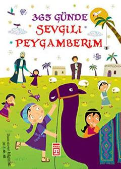

3GPayg'ambarimiz hayotidan har bir kunga bir hikoya taqdim etuvchi 365 kunlik asar.
Kitobda Payg'ambarimiz Muhammad sollallohu alayhi vasallamning hayotidan har bir kunga bir tondan hikoya tarzida tanlab olingan 365 ta qism jamlangan. Asar bolalarning oila davrasida yoki maktabda o'qishi uchun xronologik tartibda va hikoya tilida tuzilgan. Bu nashr yoshlarga go'zal axloq va diniy bilimlar ulashishga xizmat qiladi.